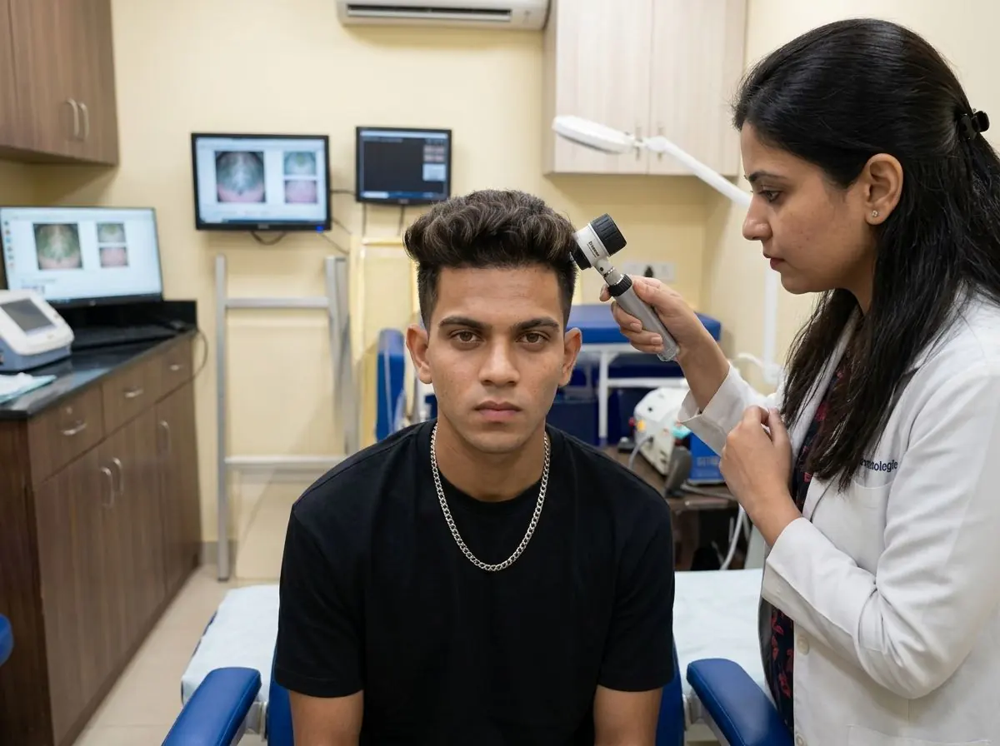
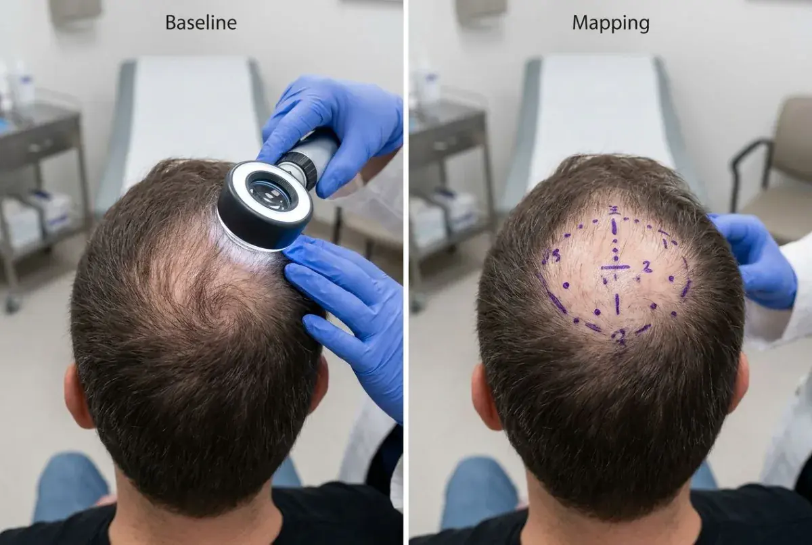
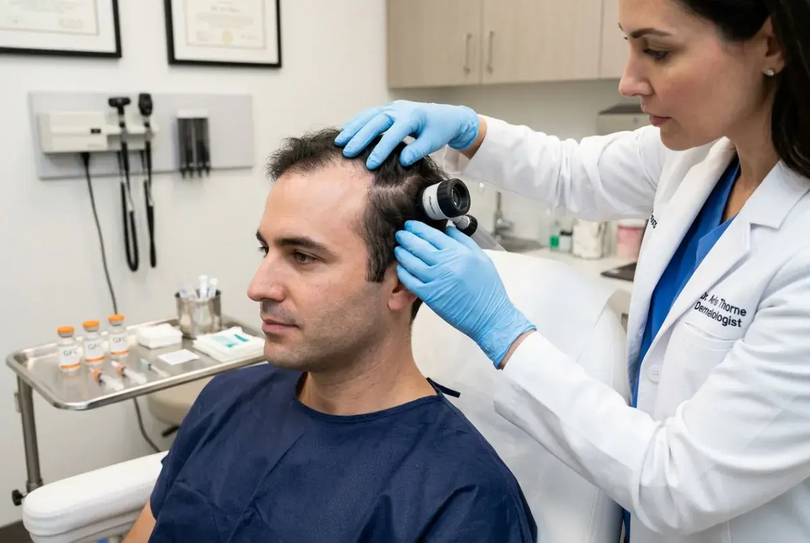
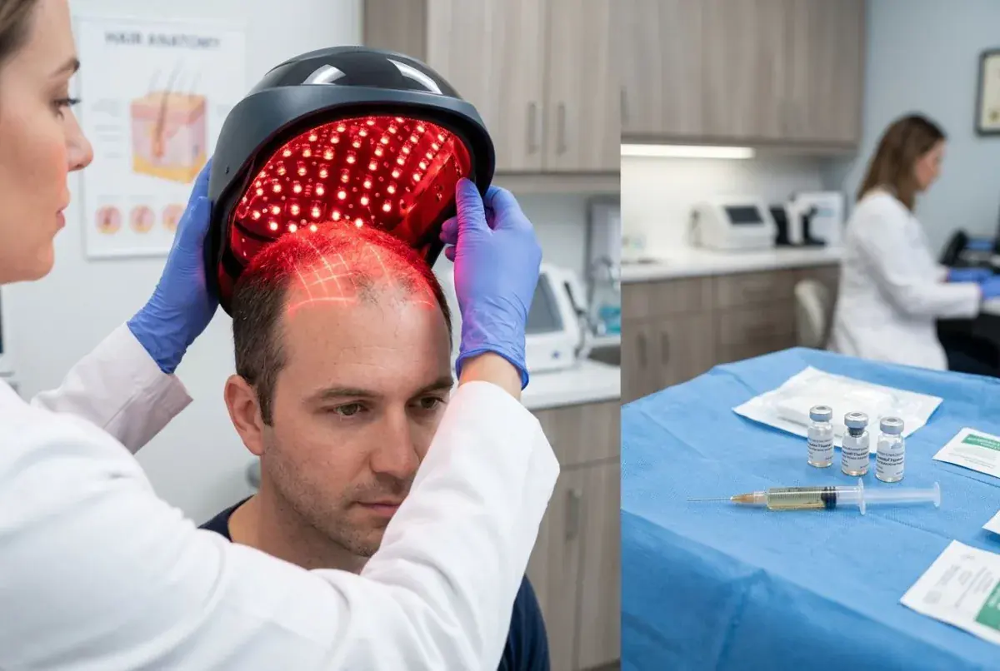

Further reading
- Norwood Scale Explained: Stages of Male Pattern Baldness
- PRP vs GFC Therapy for Hair Loss: Efficacy & Differences
- How Many PRP Sessions Are Needed for Noticeable Regrowth?
Trichoscopically-guided Medical Therapies (PRP, GFC, Regenerative Mesotherapy & Precision Hair Transplant) tailored to your specific Norwood-Hamilton hair loss stage.

Comprehensive clinical advice using polarized video trichoscopy scalp mapping to evaluate follicular density & scalp sebum.
Actual clinical progression milestones tracked during our precision hair restoration regimes: from microscopic assessment to full density recovery.

01 Week 0–4: Baseline AssessmentClinical trichoscopy identifies microscopic follicular miniaturization, sebum buildup, and baseline density profile on the vertex crown before starting growth factor stimulation.

02 Month 2–4: Temporal ActivationFollicular density starts increasing in temporal recession zones with initial non-shedding follicle reactivation. Bi-weekly growth factor therapy stimulates dormant follicles effectively.

03 Month 4–6: Follicular StimulationSubcutaneous micro-vascular growth factor cycle paired with 650nm Low-Level Light Therapy (LLLT) to thicken root calibers and activate dormant hair roots.
Substantial follicular shaft thickening, visible reduction in crown scalp shine, progressive density expansion across targeted scalp zones.
Complete follicular restoration, natural dense hairline framing, and long-term follicular retention under bi-monthly maintenance.
Hair loss is multifaceted. Our dermatologists address the biological root causes utilizing tailored biomedical and surgical pathways.
DHT-triggered pattern baldness common in men and women, requiring anti-androgen therapy.
Sudden diffuse shedding triggered by acute metabolic stress, nutritional deficits, or post-febrile illness.
Spiral thinning at the crown or vertex resulting in an expanding visible scalp circumference.
M-shaped bilateral temporal loss common in young men that alters facial proportion.
Select the clinical protocol engineered for your scalp pathology, density goals, and timeline.
Advanced next-generation growth factor concentrate engineered from patient autologous blood, delivering 3x higher platelet growth factors without RBC/WBC contamination.
Platelet-rich plasma paired with precision micro-needling creates synergistic micro-trauma and autologous platelet release to activate dormant follicles.
Precision automated follicular extraction with sapphire blades and direct implantation. Rebuilds permanent density across the hairline and crown with natural emergence angles.
Hair follicles require systematic progression through growth stages. Here is our calibrated 5-step clinical framework to permanent retention.
High-magnification dermoscopy mapping hair density/cm², scalp sebum levels, follicular caliber variability, miniaturization percentage, and systemic factors health.
Comprehensive blood panel analysis (Ferritin, Vitamin D3, Thyroid, Hormonal markers) paired with topical and oral medical anti-DHT blocking treatments reactive protocols.
In-clinic biological therapy sessions delivering concentrated growth factor concentrates into target zones to shift dormant follicles into active anagen growth.
Reduction in daily hair shedding until 90%, visible increase in hair shaft diameter, reduced scalp exposure, and improved scalp barrier integrity.
Trichoscopic photo-monitoring confirming sustained follicular coverage, recalibration to light quarterly institutional maintenance.
Clear scientific answers regarding expectations, timelines, and procedural safety.